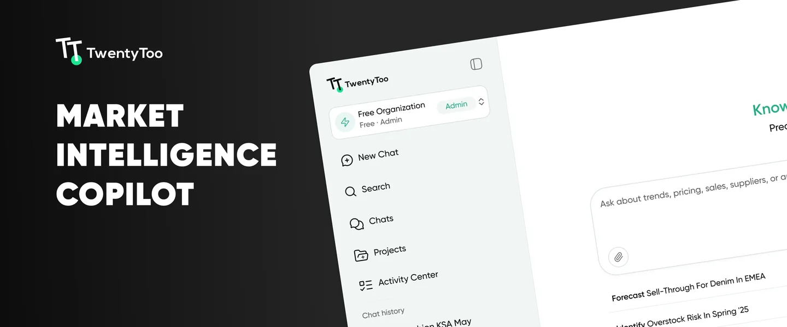

Designing for trust when the AI isn't sure
I lead product design at TwentyToo, a B2B AI-SaaS platform that gives retail teams real-time visibility into the Gulf market. The hard part wasn't the screens. It was turning AI answers that aren't always certain into something a category manager can act on.
The short version
- Lead product design on TwentyToo, a B2B AI-SaaS platform for Gulf retail market intelligence.
- The users are category managers: experts in their market, not in AI.
- Gave the empty state suggested questions written like real category-manager tasks, so a first-time user knows what to ask.
- Made uncertainty visible with confidence badges, ranges instead of single numbers, and clear alerts when data isn't live yet.
- Gave users control with three response modes that trade speed against source breadth.
- Built a style guide and a 96-component library with one visual language for charts and insight cards.
- Designed shared sessions: share a chat with specific colleagues or the whole organization, view only, revocable by the owner.
- Early-stage product, so no formal metrics yet. The signal came from PM and stakeholder feedback.
One question, start to finish



Ask the market a question
TwentyToo gives retail and e-commerce teams real-time visibility into the Gulf market: prices, discounts, competitor moves and assortment shifts across millions of products. You ask in plain language, like "how have women's dress prices in the UAE changed over the last 90 days?", and the platform answers from its own database.
The product is early in its life. Fashion is live in Saudi Arabia and the UAE, with more categories on the way. That shaped most of the decisions below.
Experts in the market, not in AI
The people using TwentyToo are category managers. They know pricing and assortment better than anyone, but they aren't technical, and they turn these answers into real pricing decisions. An AI answer that is wrong but sounds sure of itself is worse than no answer.
They shouldn't need to know how the model works to trust it.
Results feed pricing and assortment calls, so clarity beats volume.
Model output has gaps and varying confidence, and coverage is still growing.
Discovery through the people closest to the market
I lead product design end to end: the interaction model, the UI strategy and the style guide. With no dedicated research function, discovery ran through conversations with the PM and stakeholders, who know the category managers and the market first-hand. That suits an early-stage team that moves fast.
The interface should never claim more certainty than the system actually has.
Design principle · TwentyToo
That principle turned into three rules every answer had to follow. They made later decisions faster and gave engineering a shared reference.
Every result carries its confidence. Certainty is part of the answer, not a footnote.
Unsure means a range. Can't answer means saying so, then pointing somewhere useful.
Speed versus depth is the user's call. Name it and let them choose.
Make the uncertainty visible, then let people choose
Three ideas drove the interface: a clear starting point, visible uncertainty, and a choice over depth. A design system underneath keeps it consistent, and shared sessions carry answers to the rest of the team.
4A · A clear starting pointStart from a question, not a blank box
A blank input tells a first-time user nothing about what the product can do. So the empty state suggests questions, written the way a category manager would actually ask them: forecast sell-through, identify overstock risk, compare margin against last season.
- Suggested prompts start with a verb, so they read as tasks, not features
- The input hint names what to ask about: trends, pricing, sales, suppliers, or any retail analytics question
Show how sure the system is
- Confidence badges on results, so certainty is visible instead of assumed
- Ranges instead of a single exact number when confidence is lower
- Clear alerts when data is missing, or a region or category isn't live yet
Try it: the same kind of question, answered honestly at each level.
Asked: Average discount on women's dresses in the UAE this week?
Asked: Average discount on women's dresses in the UAE this week?
Asked: Forecast denim sell-through in EMEA next quarter.
Fashion is covered in Saudi Arabia and the UAE today, and sell-through forecasting isn't available yet. Here's what I can answer:
Illustrative values, recreated to show the pattern.
Three modes, one trade-off: speed against breadth
Category managers don't always want the same thing from a question. Sometimes they need a fast answer from verified data, sometimes a wider picture. Instead of picking one speed for everyone, I named the trade-off and left the choice to the user.
| Mode | Speed | Sources |
|---|---|---|
| Core Insights | Fastest | TwentyToo database only |
| Fast Expanded Insights | Fast | Database + rapid internet signals |
| Expanded Insights | Slower | Database + internet search |
Quick checks on tracked markets, from verified data only.
The middle ground for most daily questions.
A wider picture, worth the wait for bigger calls.
Relative comparison of the three modes.
A style guide the team can build on
- One consistent way to present charts and insight cards across the product
- A library of 96 reusable components, so new features ship without rebuilding the same patterns, and handoff gets faster
Shared sessions: insight that travels, view only
Pricing calls are rarely made alone. Users asked for a way to send a session to a manager or teammate instead of screenshotting answers into other tools. Shared sessions let a business member share a full chat with specific colleagues or the whole organization.
The key call was view only. A shared session is evidence for a decision, so it has to stay exactly as the owner saw it. If recipients could keep asking questions in the same thread, the context the owner relied on would shift under them. Sharing stays inside the organization, and the owner can revoke access at any time.
- Share with specific members or the entire organization
- Permission stated up front in the share dialog, before anything is sent
- A "Shared with me" inbox with an unread count, plus a banner naming who shared and the access level
Share Chat Session
Share this conversation with members of your organization
Session name
Share with
Shared with me2
The full answer, confidence and sources appear exactly as the owner saw them.
Recreated from the shipped flow. Names are placeholders.
Where sharing goes next
Proposed follow-ups that keep view only intact while removing its friction:
- Continue in my own chat. Recipients fork a copy to ask follow-ups, so the original stays untouched.
- Data-as-of stamp. Shared answers show when they were generated, so nobody acts on last month's prices thinking they're live.
- Who has access. One place for owners to see recipients and revoke one person at a time.
- Share a single answer. Send one insight instead of a long session when that's all the point needs.
What I chose, and what I set aside
The options I didn't ship say as much as the ones I did.
| Considered | Chose | Why |
|---|---|---|
| A blank input box | Suggested questions written as real tasks | A first-time user learns what the product can do before typing. |
| One precise number for every result | A figure, a range or an alert, based on confidence | A confident wrong number hurts trust more than an honest range. |
| A best guess for uncovered questions | Say what isn't covered, then point to what is | Users learn the product's limits instead of hitting silent failures. |
| One fixed speed for everyone | Three named modes, user's choice | Needs change by task. Naming the trade-off makes waiting feel intentional. |
| Public share links | Sharing inside the organization only | Pricing data is sensitive. It shouldn't leave the company by accident. |
| Recipients continue the shared chat | View only, revocable by the owner | A shared session is a record. It should stay as the owner saw it. |
Where a QA background pays off
I started in QA, and it shows most here. AI products fail in more ways than a typical dashboard, so I mapped the unhappy paths before polishing the happy one.
A region or category isn't covered. Say so, then redirect to what is.
Show a range with its badge, never a single exact figure.
Flag the gap clearly instead of filling it with a guess.
Design starts with the model's limits
Honest uncertainty design starts before the interface. I worked closely with engineering and data to understand what the model can and can't do today, like no sell-through forecasting yet and partial regional coverage, then designed the interface to reflect those limits instead of hiding them.
Early product, qualitative signal
The product is early and doesn't have mature analytics yet, so I don't have metrics to report. The signal I worked from was direct feedback from the PM and stakeholders, who sit close to how category managers use the tool.
The qualitative loop worked, but it doesn't scale. These are the signals I'd add first, each tied to a decision above:
- Mode usage splitWhich depth people actually choose, and whether the default should change.
- Follow-up after a "not covered" answerDo users take the suggested question, or leave?
- Ranges vs. single figuresDo people act on a range as readily as on one number?
- Sessions shared and openedHow often insight travels across a team, and whether recipients open it.
Honesty is a feature
- In AI products, admitting what the system doesn't know builds more trust than a polished guess.
- The design work starts with the model's limits, not in Figma.
- Measurement should ship with v1, even if it's one simple event.